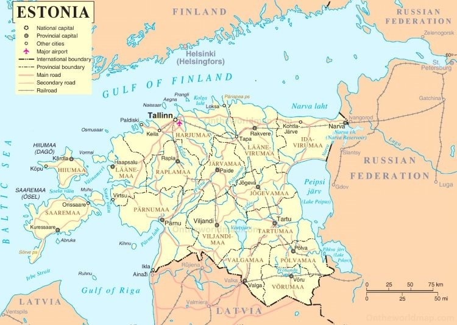
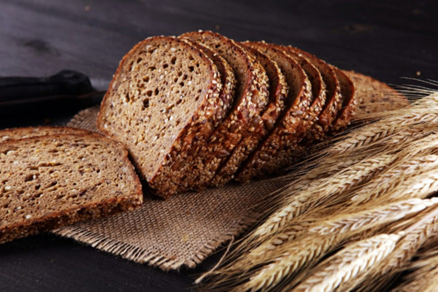
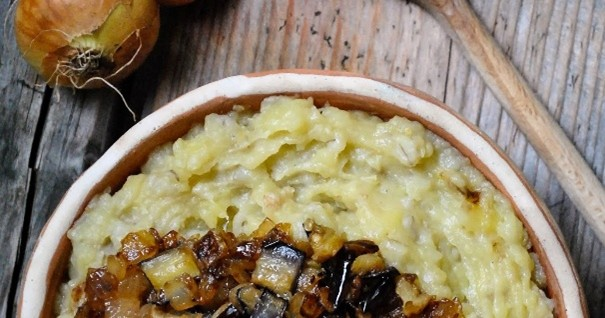
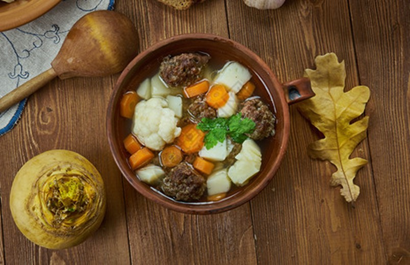
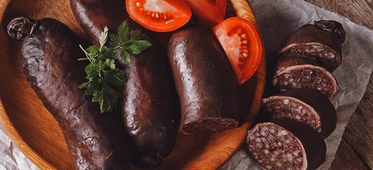
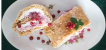
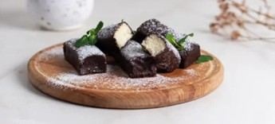
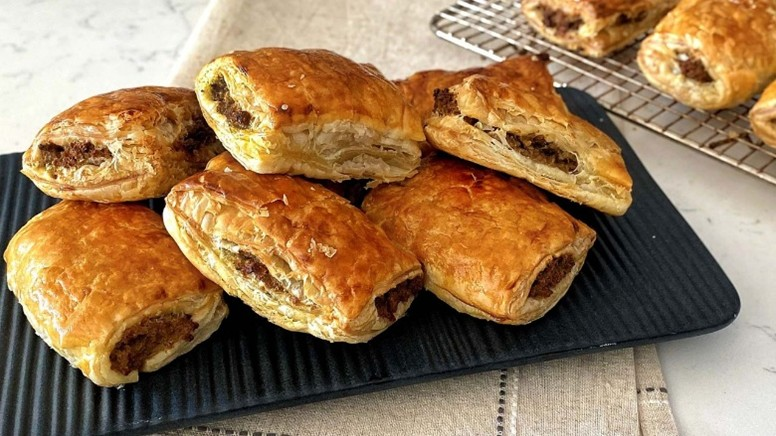

爱沙尼亚
位于欧洲东北部，东临俄罗斯，南接拉脱维亚，西濒波罗的海。气候为温带湿润型，沿海地区冬季较为温和，内陆则更具大陆性气候特征。

国土面积约为45,339平方公里，拥有超过2,000个岛屿。
“爱沙尼亚虽然是一个非热带的国家，却拥有超过 2000
个岛屿。不过你可别期望这些岛屿会像那些常见的度假胜地那样耀眼，因为绝大多数岛屿几乎完全未被文明侵。在那里，旅行者可以一窥更为原始和传统的生活方式。如果你想逃离所有熟悉的面孔，没人认识你。”
森林覆盖率接近50%，是欧洲森林覆盖率最高的国家之一。2010年，爱沙尼亚全国有54%的国土被森林和林地所覆盖。该统计数据由欧盟统计局（Eurostat）于2011年6月公布，显示爱沙尼亚在欧盟国家中森林覆盖率位居前列。
美食
以北欧、俄罗斯与波罗的海风味为主，强调季节性和本地食材。
主食包括：黑麦面包（Rukkileib）、土豆。常见传统菜肴：炖酸菜和猪肉、Verivorst（血肠）、Kama（混合麦粉，常与酸奶食用）。甜点包括：Kohuke、Pirukad。
爱沙尼亚美食融合了俄罗斯、斯堪的纳维亚和德国等多种影响，主要食材包括猪肉、黑麦面包、土豆和鱼类。
在塔林等地，可以体验到中世纪风格的餐厅和咖啡馆，如塔林最古老的咖啡馆 Kohvik Maiasmokk，提供传统甜点和饮品。
黑麦面包（Leib）

爱沙尼亚黑麦面包（leib）不仅是一种食品，也是一种具有重要文化重要性的主食。 这种致密的深色面包传统上用酵母制成，味道略带浓郁，与黄油或奶酪搭配得非常好。
每条面包均由爱沙尼亚面包师手工制作，独一无二，通常添加种子或坚果。 黑麦面包是早餐、午餐和晚餐中的常见元素，几乎是爱沙尼亚每顿饭不可或缺的一部分。
这种面包的历史深深植根于爱沙尼亚的日常生活中，可以追溯到数百年前。 黑麦面包对健康有益，因为它富含纤维，而且通常不添加糖。
许多爱沙尼亚人认为它还具有改善消化的特殊能力。 在爱沙尼亚时，如果可能的话，寻找一家传统的面包店并观察面包的制作过程。
Mulgipuder（去壳土豆泥）

Mulgipuder 是一道丰盛而舒适的菜肴，体现了爱沙尼亚乡村烹饪的精髓。 这是爱沙尼亚人如何利用当地农产品制作能够抵御波罗的海寒冷的菜肴的典型例子。
这道浓稠的粥状菜肴将土豆泥和碎粒麦片（大麦）混合在一起，有时还加入培根或香肠，提供既饱腹又温暖的菜肴。
Mulgipuder 的美妙之处在于它的简单性和吸收味道的方式。 它通常与泡菜或酸菜一起食用，展示了爱沙尼亚在寒冷的冬季保存蔬菜的艺术。
这道菜是爱沙尼亚餐桌上常见的菜肴，有时也在节日或家庭聚会期间准备。
Jänesekapsas（兔子卷心菜）

Jänesekapsas，翻译为“兔子卷心菜”，实际上与兔子无关，而是一道独特的爱沙尼亚舒适菜肴。 这是一道丰盛的砂锅菜，通常由酸菜、大麦和猪肉组成，但也有很多变化。
慢煮直至味道融合在一起，这是体验爱沙尼亚家庭烹饪深度的完美方式。
除了美味之外，jänesekapsas 还体现了爱沙尼亚人的足智多谋，他们使用简单、可用的食材来制作令人满意的膳食。
泡菜的浓郁浓郁风味和煮熟的肉质使其成为标志性的冬季菜肴，通常在寒冷的月份享用。
Verivorst（血肠）

如果没有传统血肠 verivost，爱沙尼亚的冬季假期就不完整。 这道菜唤起了庆祝的感觉，通常是为圣诞节准备的。
这些香肠由猪血、大麦以及香草和香料的混合物制成，塞入天然肠衣中。 准备好后，将其慢慢煮熟，直到香肠变得浓郁且颜色深。
Verivost 通常与酸奶油和越橘果酱一起食用，这种有趣的口味对比凸显了香肠的复杂味道。 verivost
的制作通常是一项家庭活动，每个人都会聚集在一起参与制作过程，这象征着它的文化重要性和爱沙尼亚古老烹饪传统的保存。
Kama

卡玛是一种独特的爱沙尼亚食品，在世界其他地方没有完全相同的食品。 它是烤大麦、黑麦、燕麦和豌豆粉的精细研磨混合物。
它传统上被用作快速填饱肚子的食物，但它超越了其卑微的起源，在健康爱好者和美食爱好者中找到了新的追随者。
卡玛可以甜味或咸味，与酪乳、开菲尔或酸奶混合，通常上面撒上一把新鲜浆果或一些糖。
尽管卡马不再是日常主食，但它仍然在爱沙尼亚人心中占有一席之地，并在高档咖啡馆和餐馆中卷土重来，融入现代甜点和其他创新菜肴中。
其浓郁的坚果风味和富含纤维的额外好处，使其成为任何寻求探索爱沙尼亚正宗口味的人的必尝之选。
Kohuke

对于任何爱吃甜食的人来说，kohuke 都是一种难以抗拒的美食。 这些小而甜的奶酪凝乳零食覆盖着一层薄薄的巧克力，有多种口味，如香草、可可或水果夹心。 Kohuke
是爱沙尼亚儿童和成人喜爱的零食，可以在任何杂货店轻松找到。
Kohuke 展示了爱沙尼亚人对乳制品的热爱，其光滑的奶油质地彰显了当地牛奶的高品质。 吃 kohuke
不仅是一种美味的体验，而且还可以让您一睹这个国家的现代烹饪场景，它既拥抱传统，又迎合当代口味。
Pirukad（爱沙尼亚糕点）

如果不品尝各种pirukad，爱沙尼亚的烹饪探索就不完整。 这些小糕点配有各种馅料，如肉末、卷心菜、胡萝卜、米饭，甚至甜馅料。
它们是一种最受欢迎的零食，可以在一天中的任何时间享用，尤其受到忙碌的人们的欢迎。
Pirukad 证明了邻近美食对爱沙尼亚饮食文化的影响，展示了俄罗斯和东欧对当地食材的风味。
无论是咸味还是甜味，这些糕点都体现了爱沙尼亚厨师的适应性和创造力，他们掌握了以美味和创造性的方式充分利用丰收收获的艺术。